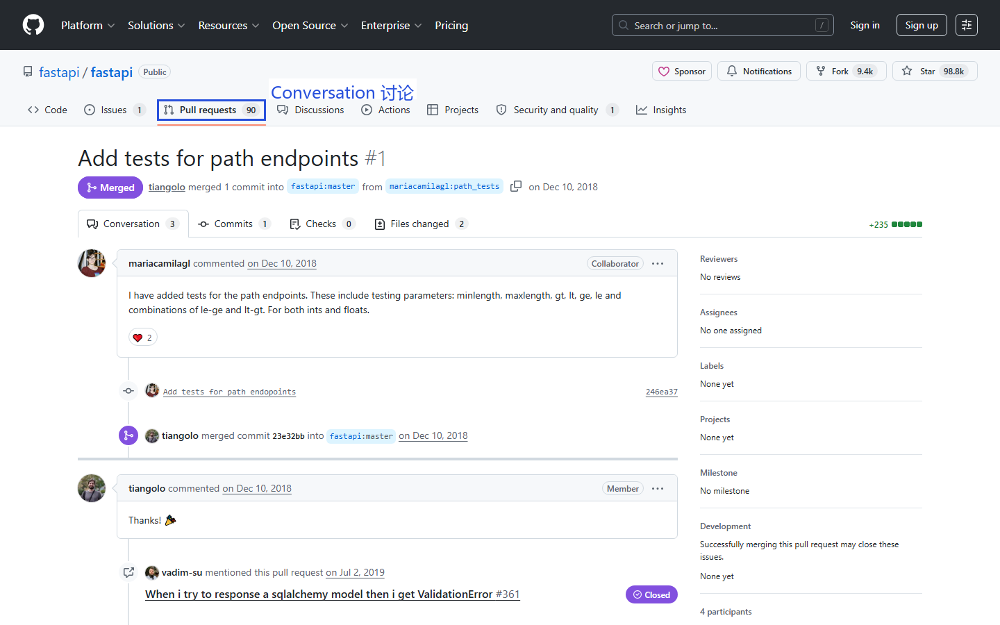
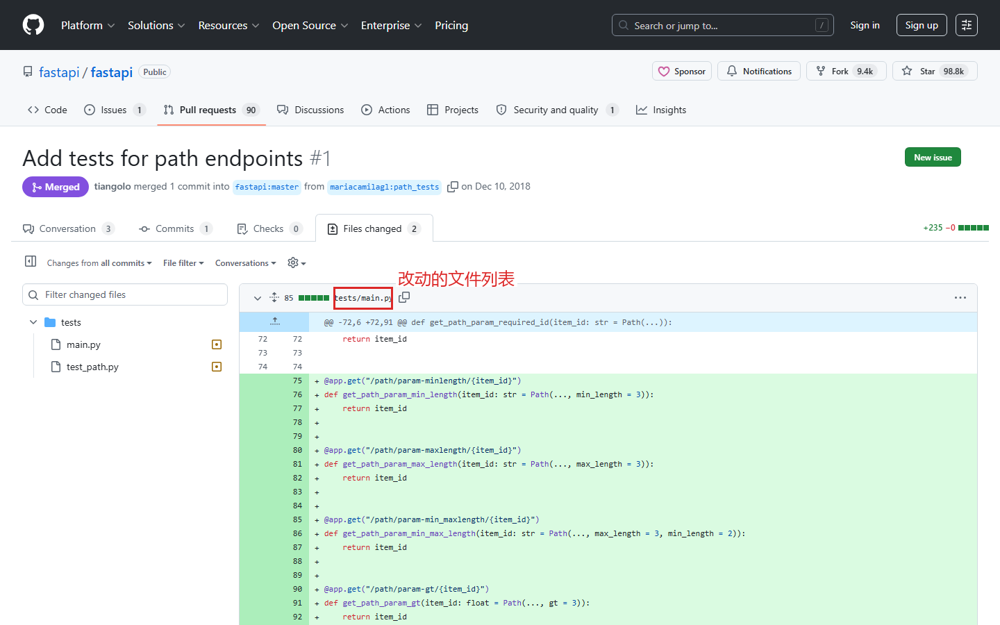
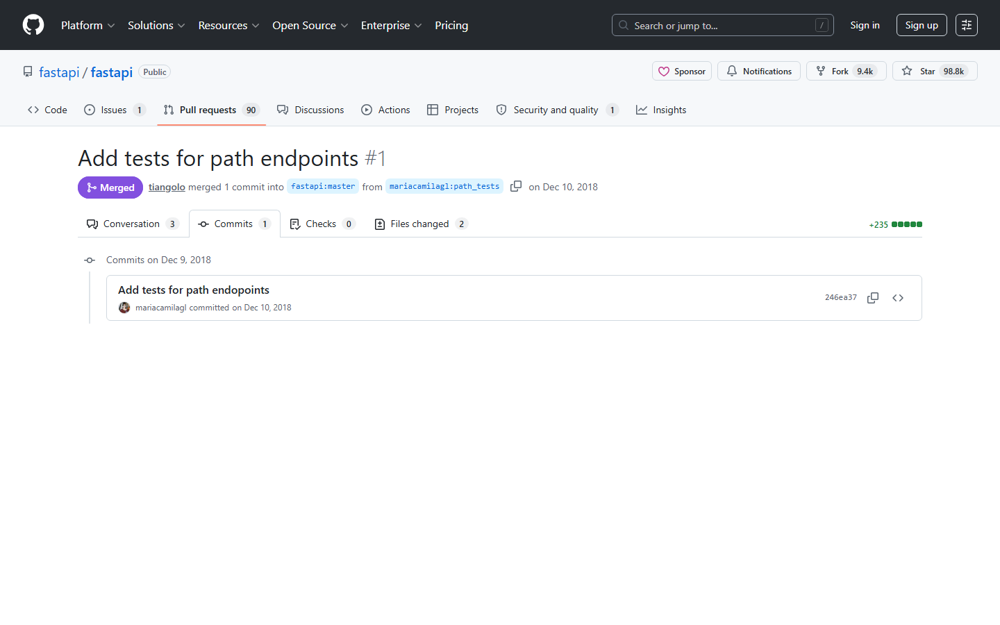

第八课：Pull Request（三）— 生命周期与合并
时长：30 分钟 | 前置：第七课 | P0 词条：18 个 | 覆盖 UI 元素：22 个
学习目标
学完这节课，你能：
- 看懂 PR 页面的四个子标签（Conversation / Commits / Checks / Files changed）
- 理解 CI（持续集成）在 PR 中的状态含义
- 处理 Merge Conflict（合并冲突）的基本思路
- 区分三种 Merge 方式并选择正确的一种
- 理解 Sync Fork（同步上游）的操作
0. 开场（1 min）
画面：打开一个已创建的 PR

旁白：
"PR 创建之后，它还有自己的生命周期：有人 Review、CI 跑测试、可能会有冲突、最后合并。
这节课我们走完 PR 从创建到合并的全过程，同时学会怎么看懂 PR 页面上的四个子标签。"
1. PR 页面四大子标签（5 min）
画面：PR 页面顶部子标签，逐一讲解

1.1 标签概览
| 标签 | 英文 | 作用 |
|---|---|---|
| Conversation | Conversation | 对话 / 讨论区（默认显示的标签） |
| Commits | Commits | 这个 PR 包含的所有独立提交 |
| Checks | Checks | CI（持续集成）的运行结果 |
| Files changed | Files changed | 改动了哪些文件，逐行对比 |
1.2 Conversation 标签
| 元素 | 说明 |
|---|---|
| PR 标题 + 正文 | 你创建 PR 时写的内容 |
| 评论区 | 所有人的讨论、Review 反馈 |
| Merge / Close 按钮 | 页面底部 |
| 右侧面板 | Reviewers / Assignees / Labels / Projects / Milestone |
| CI 状态摘要 | 黄色圆点=运行中，绿色对勾=通过，红色叉=失败 |
1.3 Commits 标签
| 元素 | 说明 |
|---|---|
| 提交列表 | 这个 PR 里所有独立的 commit |
| 每个 commit | SHA、message、头像、时间 |
| 点进去 | 看这个 commit 的详细 diff |
| 作用 | 检查 PR 里是否混入了无关的 commit |
1.4 Checks 标签
| 元素 | 说明 |
|---|---|
| CI 运行列表 | 每个 Workflow 的运行状态 |
| 状态图标 | 🟡黄色=运行中 / ✅绿色=通过 / ❌红色=失败 |
| 点进具体检查 | 查看运行日志（Actions 课详讲） |
| 作用 | 确认代码是否通过了自动化测试 |
1.5 Files changed 标签（重要！）
| 元素 | 说明 |
|---|---|
| 所有改动的文件列表 | 只显示有修改的文件 |
| 绿色行 | 新增的代码 |
| 红色行 | 删除的代码 |
| 文件后数字 | 绿色+N = 新增 N 行 / 红色-N = 删除 N 行 |
| Viewed 复选框 | 标记为已查看 |
| 顶部右上 | Split（分屏）/ Unified（统一） 切换视图 |
Code Review 的详细操作在第九课讲。
操作演示：

【录屏】逐个切换四个子标签 → 在 Commits 标签展开看 → 在 Files changed 标签说明绿色/红色含义
2. CI 状态解读（4 min）
画面：PR Conversation 标签底部或 Checks 标签
2.1 CI 是什么
| 概念 | 简单理解 |
|---|---|
| CI（Continuous Integration） | 持续集成：自动化测试 + 检查 |
| 在 PR 中体现 | 每次 Push 新代码，GitHub 自动跑测试 |
| 结果 | 通过（绿勾 ✅）或 失败（红叉 ❌） |
2.2 CI 状态图标含义
| 图标 | 状态 | 含义 |
|---|---|---|
| 🟡 黄色圆点 | Pending / In progress | 正在运行，等一会儿 |
| ✅ 绿色对勾 | Success / Passed | 所有测试通过 |
| ❌ 红色叉 | Failure / Failed | 有测试没通过，需要修代码 |
| ⬜ 灰色横线 | Neutral | 有些检查没有结果（不关心） |
2.3 CI 失败怎么办
| 步骤 | 操作 |
|---|---|
| 1 | 点红叉旁边的 Details 链接 |
| 2 | 跳转到 Actions 页面看运行日志 |
| 3 | 找到失败的步骤，看报错信息 |
| 4 | 在本地修代码 → commit → push |
| 5 | Push 后 CI 自动重新运行 |
CI 详细操作在第十课和第十一课讲。
3. Merge Conflict（合并冲突）（5 min）
画面：展示一个冲突场景
3.1 什么是 Merge Conflict
| 概念 | 说明 |
|---|---|
| 什么情况下冲突 | 两个人同时改了同一个文件的同一行 |
| 怎么知道冲突了 | PR 页面显示 "This branch has conflicts that must be resolved" |
| 会阻止合并吗 | 是的，有冲突就不能 Merge |
3.2 解决冲突的三种方式
| 方式 | 难度 | 适用场景 |
|---|---|---|
| 1. 在 GitHub 网页上解决 | 简单 | 冲突很小（一两行） |
| 2. 用命令行解决 | 中等 | 复杂冲突 |
| 3. 用 VS Code 解决 | 中等 | 有 VS Code 的话最直观 |
3.3 在 GitHub 网页上解决冲突
| 步骤 | 操作 |
|---|---|
| 1 | 在 PR 页面看到 "Resolve conflicts" 按钮，点击 |
| 2 | 进入在线编辑器，标记冲突的代码 |
| 3 | 手动编辑：选择保留哪边的代码（或两边都保留） |
| 4 | 点 Mark as resolved |
| 5 | 点 Commit merge |
注意：网页解决只适合简单冲突。复杂的还是用命令行或 IDE。
3.4 避免冲突的最佳实践
- 改之前先 Sync Fork（下面讲）
- 一个 PR 只做一件事，PR 越小越快合并，越不容易冲突
- 经常 Pull 最新的 Upstream 代码到本地
4. 三种 Merge 方式（5 min）
画面：PR 页面底部 Merge 按钮旁边的下拉箭头
4.1 三种方式对比
| 方式 | 英文 | Git 操作 | 产生的 Commit | 适用场景 |
|---|---|---|---|---|
| Merge commit | Create a merge commit | git merge |
多一个 Merge Commit | 大团队，需要保留完整历史 |
| Squash and merge | Squash and merge | git merge --squash |
所有 commit 压成 1 个 | PR 里 commit 很碎（fix typo / fix again） |
| Rebase and merge | Rebase and merge | git rebase |
不增加 commit，但历史是线性的 | 追求干净历史的项目 |
4.2 详细对比
Merge Commit（创建合并提交）：
Before: A---B---C (main)
\
D---E (PR分支)
After: A---B---C-------M (main)
\ /
D---E---/
- PR 里的所有 commit 都保留
- 增加一个 M（Merge commit）
- 历史图有分叉
Squash and Merge（压缩合并）：
Before: A---B---C (main)
\
D---E (PR分支)
After: A---B---C---S (main)
- PR 里的 D、E 被压缩成一个 S
- 历史是线性的
- PR 里乱七八糟的 commit 被压缩干净
Rebase and Merge（变基合并）：
Before: A---B---C (main)
\
D---E (PR分支)
After: A---B---C---D'---E' (main)
- PR 的 commit 被"接"到 main 后面
- 历史完全线性
- 没有额外的 Merge Commit
4.3 怎么选
| 场景 | 推荐 |
|---|---|
| 你 Fork 别人的仓库，提了一个小 PR | Squash and merge（通常项目维护者会选这个） |
| 团队内 Feature 分支开发 | Squash and merge 或 Merge commit |
| 追求完全线性的 Git 历史 | Rebase and merge |
GitHub 默认选 Create a merge commit。如果不确定，让项目维护者决定。
5. Close PR（关闭 PR）（2 min）
5.1 Close vs Merge
| 操作 | 含义 |
|---|---|
| Merge pull request | 合并代码，PR 完成使命 |
| Close pull request | 关闭但不合并。放弃这个 PR 的改动 |
Close = 不合并也不删除。被关闭的 PR 仍然保留，只是不再打算合并。
5.2 什么时候 Close 而不 Merge
| 场景 |
|---|
| 发现方案不可行，有更好的做法 |
| 重复了另一个 PR |
| 实验性改动，证实行不通 |
| 维护者明确表示不会接受这个改动 |
6. Sync Fork（同步上游）（4 min）
画面：回到你的 Fork 仓库页
6.1 为什么要同步
旁白：
"你 Fork 之后，原仓库还在继续更新。你的 Fork 不会自动同步。过几天你的 main 就落后了，如果不跟上，下次你的 PR 会基于旧代码，容易冲突。"
6.2 Sync Fork 操作
| 步骤 | 操作 |
|---|---|
| 1 | 进入你的 Fork 仓库页 |
| 2 | 看中间提示条：This branch is X commits behind ant-design:main |
| 3 | 点 Fetch upstream 按钮 |
| 4 | 在弹出的小菜单点 Fetch and merge |
| 5 | 等几秒 → 提示变成 "This branch is up to date with ant-design:main" |
| 6 | 本地也需要 Pull：git pull origin main |
操作演示：
【录屏】Fork 页面 → 看到 "X commits behind" → 点 Fetch and merge → 提示更新成功 → 到终端
git pull
7. 完整 PR 生命周期回顾（2 min）
你看到项目 → Fork（云端复制）→ Clone（下载到本地）
→ 创建分支 → 改代码 → Commit → Push 到你的 Fork
→ 在 GitHub 上创建 PR → CI 自动跑测试
→ Reviewer 审查 → 你可能需要改代码（重复改→Push）
→ CI 再跑 → Reviewer Approve → 合并！
→ 你的代码进入原仓库 → 🎉
课后作业
- 基于之前的 PR，在本地再做一次修改 → Push → 观察 PR 自动更新
- 点击 Checks 标签，查看 CI 运行日志（如果项目有 CI 的话）
- 点击 Files changed 标签，在 Split 和 Unified 两种视图之间切换
- 在你的 Fork 仓库里操作 Sync Fork
- 把之前的 PR 用 Close 关掉（别 Merge，因为那是假改动）
本课术语速查
{.glossary-table}
| 英文 | 中文 | 出现位置 |
|---|---|---|
| Conversation | 对话讨论 | PR 子标签 |
| Commits | 所有提交 | PR 子标签 |
| Checks | 检查（CI） | PR 子标签 |
| Files changed | 文件改动 | PR 子标签 |
| CI (Continuous Integration) | 持续集成 | Checks 标签 |
| Merge Conflict | 合并冲突 | PR 页面红色提示 |
| Resolve conflicts | 解决冲突 | 冲突提示按钮 |
| Merge pull request | 合并 PR | PR 底部绿色按钮 |
| Close pull request | 关闭 PR | Merge 按钮旁边的选项 |
| Merge commit | 合并提交 | Merge 方式一下拉 |
| Squash and merge | 压缩合并 | Merge 方式一下拉 |
| Rebase and merge | 变基合并 | Merge 方式一下拉 |
| Sync Fork | 同步上游 | Fork 页面提示条 |
| Fetch upstream | 拉取上游 | Fork 页面按钮 |
| Fetch and merge | 拉取并合并 | Fetch upstream 子选项 |
| Behind / Ahead | 落后 / 领先 | Fork 页面提示 |
| Up to date | 已是最新 | Fork 页面提示 |